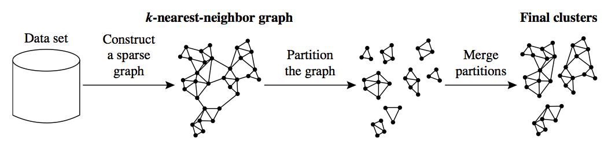

2013-03-07-Hierarchical
Table of Contents
1 Hierarchical & Density
2 Methods
- Partitioning
- Construct
kgroups, evaluate fitness, improve groups - Hierarchical
- Agglomerate items into groups, creating "bottom-up" clusters; or divide set into ever smaller groups, creating "top-down" clusters
- Density
- Find groups by examining continuous density within a potential group
- Grid
- Chunk space into units, cluster units instead of individual records
2.1 Algorithms notes
- Partitioning
- k-means, k-medoid
- Hierarchical
- Build groups 1 "join" at a time, examining distance between two things that can be joined together, if close, combine groups. Reverse: divisive.
- Density
- Many of the above methods just look for distance. This method tries to find groups that might be strung out, but maintain a density. Think about an asteroid belt. It is one group, but not clustered together in a way you typically think.
- Grid
- Read the book
3 k-means Input animate
- What did we supply to k-means before we ran it?
k: number of clusters- Clusters disjoint*
- Hierarchical clustering builds up clusters incrementally
3.1 Difference notes
- Hierarchical can find cluster of clusters
- Can illustrate clusters at many levels, let human intemperate what makes sense without guess-and-check
- Clusters are built 1 cluster at a time, starting with all points being their own cluster
- *We'll learn about "fuzzy" clustering next time, where cluster membership is a probability
4 Agglomerative
- All points are separate clusters
- Find closest clusters: Join them
- Repeat

4.1 Bottom-up notes
- Any questions about this?
- What does "close" mean?
5 Cluster Distance
- Minimum
- Use the two closest points
- Maximum
- Use the two farthest points
- Mean
- Use the mean of the two clusters
- Average
- Sum of the distances of all pairs, divided by number of pairs
5.1 Meta Distance notes
- These are actually distance metrics for clusters that translate down to distance metrics for points.
- Still need to decide distance measures for points: Euclidean, Manhattan, etc. And that's just for numerical distance
- Choose based on expected cluster topology, cross validation testing using human observers
6 Termination
- Define have
kclusters - Distance between clusters exceeds threshold
- Fitness function for cluster
6.1 Details notes
- If you wanted to look at all potential
k, setkto 1, then look at sub clusters - Distance or fitness function (eg. density or minimum intra-cluster
similarity score) can help define
kautomatically
7 Dendrogram two_col

- Display of clustered groups
- Concise visualization: groups do not need to be identified or named
- Y axis can represent iteration
7.1 Usefulness notes
- Can move up and down clustering to make sense of individual clusters
8 CHAMELEON two_col
- Discover large number of small clusters
- Group together small clusters
- Join clusters with a high interconnectedness relative to their existing interconnectedness

8.1 Details notes
- Mix of partition & agglomerative
- Partition by finding groups of k-nearest neighbors: A, B in the same group if A is a k-nearest neighbor of B.
- Interconnectedness measured by aggregate proximity in the group, or using a network model the book provides details on (10.3.4)
9 Results

9.1 Properties notes
- Tends to "follow" clusters as long as interconnectedness stays high
10 Density: DBSCAN two_col
- Find "paths" of points that are in "dense" regions
- Paths: points within a distance
e - Density: surrounded by
MinPtswithin region of radiuse

10.1 Details notes
- Can find non linear "paths" to follow as long as they stay dense
11 Density Trade-offs two_col

- Finds clusters of different sizes, shapes
- DBSCAN is sensitive to the parameters used. How big is
e? How many points is "dense"?
11.1 Details notes
12 Algorithm Choice
- Simple techniques often work surprisingly well
- Choose other algorithms to tackle specific problems
- Evaluation metrics
12.1 Lessons notes
- Just like Naive Bayes, we make assumptions about our data that turn out to be right enough: clusters are uniformly sized, don't wander around our dimensioned space
- Topic drift: tendency for a cluster to change its properties slowly over time: eg. articles on politics might use different words
- Performance: many of these algos are computationally expensive, hard to distribute. Book goes into run times and where to make compromises on the algo
- Figure out a fitness function for your metric. If you used these clusters to take action, what would be the result?
13 Elbow Method two_col
- Calculate intra-cluster variance
- Compare to data set variance (F-test)
- Find point where marginal gain of explicative power decreases

14 Labels
- Clustering is an example of unsupervised learning
- But after clustering, humans can label clusters, and their contents
- Now one can use homogeneity metrics to evaluate clusters
14.1 Homogeneity notes
- Gini Index
- Entropy
- Precision / Recall